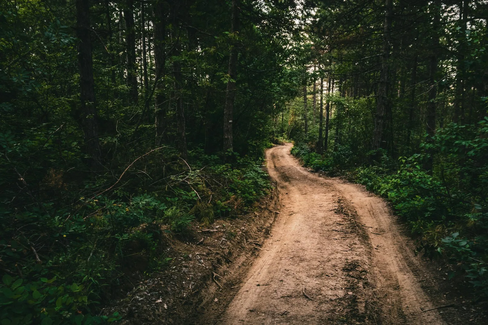
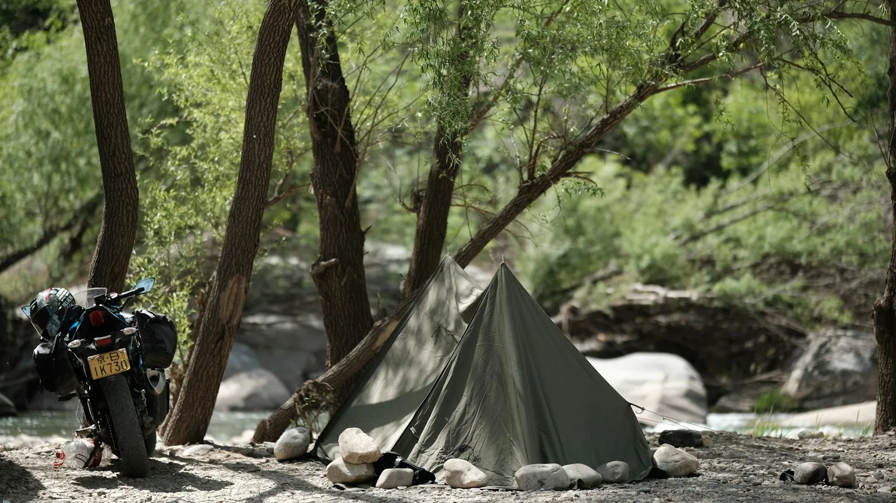

Статьи / Маршруты / По Ветлуге, пока не кончится асфальт
Маршрут · 3 дня · мото
По Ветлуге, пока не кончится асфальт
Три дня на север вдоль реки: сосновые боры, песчаные грунтовки и деревни, куда автобус приходит раз в неделю.
МотоНочёвка в палаткеГрунт и песок
Км≈320
Дней3
ПокрытиеАсфальт, грунт, песок
СложностьВыше средней
СезонИюнь — сентябрь
Проверено9 августа

Как это повторить
Воскресенское — Варнавино
Грунт через боры, два брода в сухую погоду, песок на последних двадцати километрах.Варнавино — Ветлуга
Деревни и старый тракт. В Ветлуге заправка, кафе и дорога домой по асфальту.По пути



Остановки
ЗаправкаПоследняя перед грунтом в Воскресенском, км 110. Дальше 150 км без АЗС.
ЕдаКафе в Воскресенском и Ветлуге. В деревнях только магазины до шести.
НочёвкаДве стоянки на высоком берегу: км 112 и км 228.
РемонтМотосервис только в Ветлуге. Шиномонтаж в Варнавино.
Что учесть
ПесокКм 200–225 глубокий песок. На дорожной резине не проехать.
БензинВозьмите канистру на 5 л или считайте запас хода заранее.
СвязьНа участке км 140–230 сигнала почти нет. Карта офлайн.
БродыТолько в сухую погоду, глубина до колена. После дождя объезд по мосту, +40 км.
Опыт поездки · текст и фото: Ольга Решетова · август 2026

Асфальт закончился раньше, чем мы были готовы
Первый день прошёл спокойно: ровная трасса, заправки, вечером стоянка над рекой. Мы даже обсуждали, не проехать ли весь маршрут за два дня.
На второй день после Воскресенского дорога стала песчаной. Сначала немного, потом колёса начали уходить в песок по обод. Я ехала на дорожной резине, потому что думала, что и так проеду.
Скорость упала до пятнадцати километров в час. Зато в бору было так тихо, что слышно, как остывает двигатель на остановках.
Цена решенияПлан: дорожная резина, «и так проеду»Сели в песок на км 210 и три часа выкапывали мотоцикл+3 часасорванное сцеплениеНе повторяйтеошибка автора
берите внедорожную резину, серьёзно

Что изменилось с тех пор
Дополнить маршрутМост у Варнавино отремонтировали, объезд брода теперь короче, около 15 км.
Песок на км 200–225 после жары стал ещё глубже. На тяжёлом мотоцикле лучше объехать через Михайловское.
Заправка в Варнавино снова работает, но только наличными.